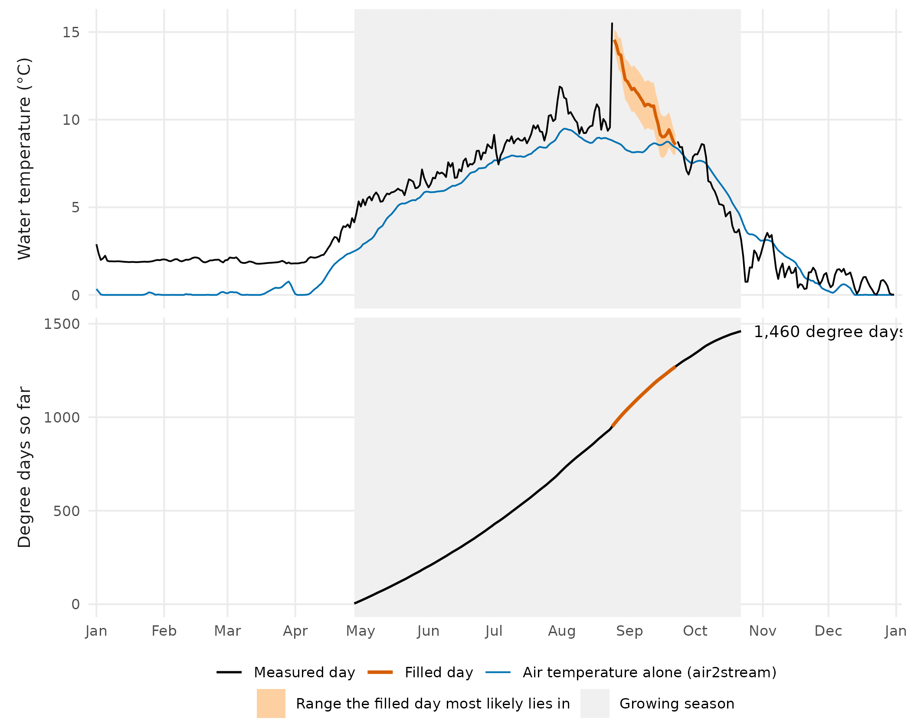
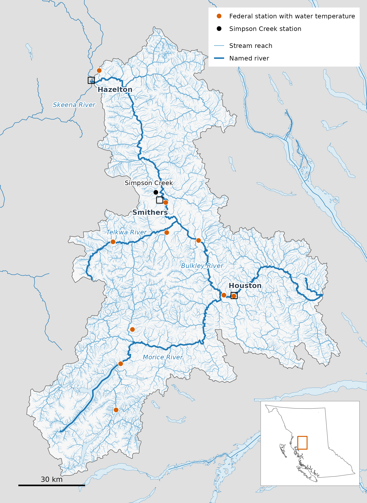
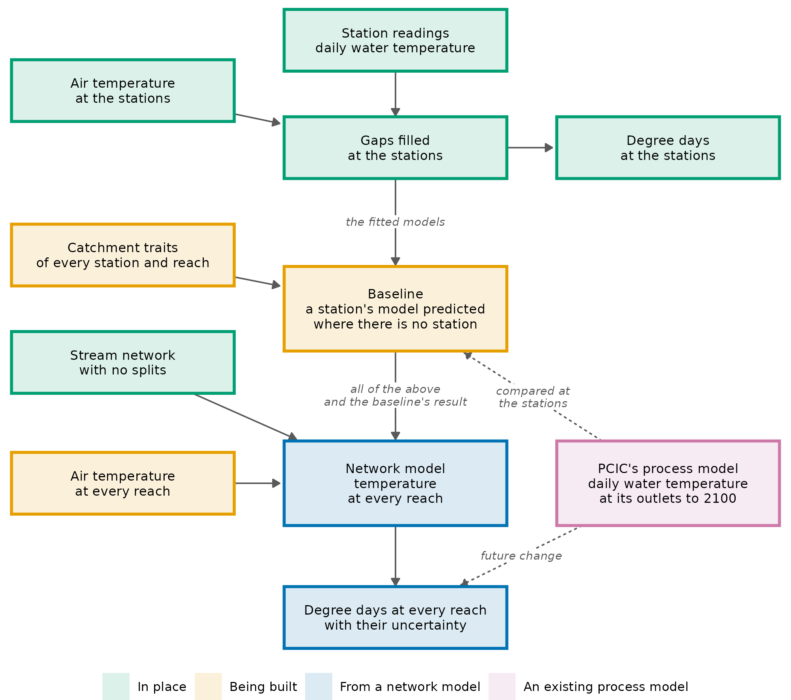
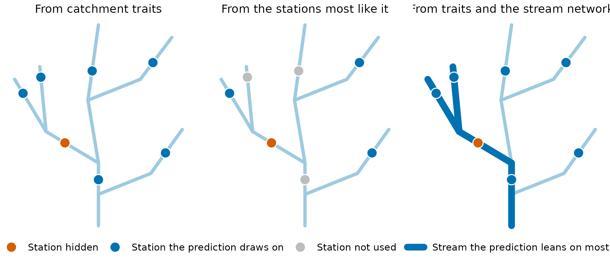

Stream Temperature per Segment: How We Get There
Source:vignettes/articles/segment-temperature.Rmd
segment-temperature.RmdThe R package wet,
for stream flow and water temperature in British Columbia, does not yet
give temperature for every stream reach (Irvine 2026c). This
article shows where that work starts, what it aims for, and how it will
be tested. The aim is growing-season degree days, a measure of how much
warmth a stream gives young fish in a year, at every reach (a mapped
stretch of stream) in British Columbia. Today they can be computed at a
few hundred stations across the province. Getting from those to every
reach takes a model on the stream network. The
roadmap says what is done and what is next.
What are growing-season degree days, and why do they matter for fish?
A fish grows faster in warmer water, up to a point. Growing-season degree days add up that warmth over the part of the year when a stream is warm enough for growth: each day’s mean water temperature, summed from the first week that averages above 5 °C to the first week that falls below 4 °C (Coleman and Fausch 2007). A stream that holds 10 °C for 100 days gives 1,000 degree days. Where the total is low, fish that hatch in summer can be too small to survive their first winter (Coleman and Fausch 2007), so the total helps say which streams can produce fish.
The figure shows one year at one station: Simpson Creek at its mouth,
about 4 km north-west of Smithers, where it joins Kathlyn Creek on the
way to the Bulkley River. The station recorded every day from March
through November of 2020 except 29 days from 25 August. A season with a
missing day has no total, so the gap is filled first. wet_temp_fill()
fills it with air2stream, a model of how water
temperature follows air temperature (Toffolon and Piccolroaz
2015), corrected by the station’s own readings on either side
of the gap and by what nearby stations did on the same days. Run on air
temperature alone, uncorrected, the model is called
open-loop. A reach with no station has no readings, so
open-loop is where it starts.

Simpson Creek at its mouth in 2020. Top: each day’s mean water temperature as the station recorded it (black); the 29 days filled across the gap from 25 August to 22 September (orange), with the fill’s 95% interval (pale band); and what air temperature alone gives through air2stream, the open-loop line (blue). Bottom: degree days adding up through the growing season, 28 April to 22 October (shaded in both panels), to 1,460; the stretch that rests on filled days is orange. The last reading before the gap, 15.5 °C after 9.6 °C the day before, is most likely a sensor leaving the water, and the fill starts from it.
The fill restarts from every reading, so a bad one is carried into it. Here the last reading before the gap is about 6 °C above the day before while the air barely warmed. The figure shows the year as the method gives it; hiding that one reading lowers the total from 1,460 to 1,393 degree days.
Where do we have temperature, and where not?
The aim is the whole province; the Bulkley River basin is used here
only as an example. A reach here is one stream segment
of the Freshwater Atlas, the province’s map of its streams (FLNRORD
2021). The Bulkley River runs north-west from Houston past
Smithers to meet the Skeena River at Hazelton, and the stream network of
its basin has tens of thousands of reaches. About a dozen hold a federal
hydrometric station that has recorded water temperature, some only
recently. Small-stream loggers are not in wet yet.

One basin as an example, the Bulkley River: every reach of its stream network (blue, heavier on larger streams) and the federal hydrometric stations that have recorded water temperature (orange points; Simpson Creek’s, the first figure’s, is black). The Bulkley, Morice and Telkwa rivers are drawn heavy and named. Lakes of 500 ha and up are pale blue; land outside the basin is dimmed, with its larger rivers thin and the Skeena named. Houston, Smithers and Hazelton are labelled (open squares), the bar is 30 km, and the inset places the map in British Columbia.
The network drawn stands on Simon Norris’s fwapg (Norris
2024), which loads the Freshwater Atlas into PostgreSQL. Side
channels are trimmed from it so that water never splits on its way
downstream, as a stream network model needs; that step runs from a fork
of fwapg today (Norris and Irvine
2026).
How do we get from stations to every reach?
The diagram shows how readings at a few stations become a value everywhere; its colours say which parts exist.

From station readings to degree days at every reach. Each box is one piece and each arrow says what feeds what. The box’s colour says where the piece stands: in place (green), being built (orange), what a network model would add (blue), and a process model that already exists (purple), joined by dashed arrows because it is a comparison and a source of future change, not a step in the chain.
- Catchment traits describe the land above a point: its position, elevation, snow, lakes and glaciers.
- The baseline is the simple answer: what catchment traits alone can say. air2stream has three settings that say how closely a stream’s water follows the air, fitted at each station. The baseline predicts them where there is no station from catchment traits, two ways: by a relation fitted across stations, or from the stations most like it.
- A network model fits every station at once and lets reaches on the same stream inform each other. It can draw on everything above it in the diagram: the network, the stations and their filled records, the traits, air temperature at every reach, and how the baseline did. What is needed from it is temperature at every reach with its uncertainty, and degree days with that uncertainty carried through. Network models of weekly stream temperature have been fitted for the Nechako and Skeena watersheds (Hill et al. 2024; Hill et al. 2025), and this work follows them. The method and the time step are open.
A process model works the other way, simulating water and heat moving down rivers from the weather. The Pacific Climate Impacts Consortium’s model (Pacific Climate Impacts Consortium 2026) gives daily water temperature at points on its own river network, on past weather and under climate models to 2100. Its temperatures can be compared with the same station records, and it is one way to ask where streams are becoming warm enough for fish.
How will it be tested?
By hiding stations. A holdout takes a station’s whole record away, predicts it as if the station had never been there, and compares the prediction with what the station recorded. Three simple predictions are to be tested this way, at stations across the province with a complete growing season, on daily temperature and the season’s degree days: the baseline’s two, and one that adds the stream network. The same hidden stations are there for any model to be compared on.

The test, as a sketch on a made-up network (pale lines). One station is hidden (orange) and its air2stream settings are predicted three ways, each drawing on the stations in blue and leaving the grey ones out: from catchment traits, a relation fitted to every other station; from the few stations whose catchments are most like it, wherever they are; and from traits and the stream network together, leaning most on the stream that runs up and down from the hidden station (heavy line). The first two are the baseline.
The third is kriging: estimating a value at an unmeasured place from measured places, weighting the near ones most. On a stream network, near is measured along the water and in the direction it flows. Here it is a simple stand-in for the network, not the network model: it adds the network to the same traits, so its difference from the baseline is what the network adds. Each of the three is then run through air2stream on the hidden station’s own air temperature and compared with two marks: the model fitted to that station’s own record, the best these three could do, and the average of all stations, what knowing nothing gives. Each is tried twice, with and without the hidden station’s neighbours up and down its stream; for the network’s prediction that difference is what the neighbours are worth.
What is not known yet?
- The error with no station. Even at a station, when a whole growing season is hidden, air2stream on air temperature alone misses that season’s total by about 129 degree days on average. With air2stream, a reach with no station can only do worse; how much worse is what the test measures.
- Small streams. Most reaches are small streams and few stations sit on one, as in the basin above, so the test says least about them.
- Readings that are not water. Nothing screens yet for one like the first figure’s.
- The thresholds. They exist for cutthroat trout in high-elevation Colorado streams, where 900 to 1,200 degree days gave the best recruitment and under 800 was unsuitable (Coleman and Fausch 2007). Reports on westslope cutthroat trout in the Elk Valley apply them (Thorley and Branton 2022; Hocking et al. 2022). None has been found yet for other British Columbia species.
How were the numbers in the first figure made?
The fill borrows from its sub-drainage’s other stations, so the recipe reads them all.
library(wet)
# the gauges of WSC sub-drainage 08E; most record no water temperature, and
# wet_temp_daily() warns of those and returns the ones that do
st <- tidyhydat::allstations
st <- st[startsWith(st$STATION_NUMBER, "08E"), ]
water <- wet_temp_daily(st$STATION_NUMBER, from = "2002-01-01", to = "2025-12-31")
st <- st[st$STATION_NUMBER %in% water$station_number, ]
# daily air temperature at each, then the fill and the degree days
air <- cd::cd_extract_daily(data.frame(id = st$STATION_NUMBER, lon = st$LONGITUDE, lat = st$LATITUDE),
"2002-01-01", "2025-12-31", variables = "tmean")
pool <- stats::setNames(substr(st$STATION_NUMBER, 1, 3), st$STATION_NUMBER)
filled <- wet_temp_fill(water, air, pool = pool)
gsdd <- wet_temp_gsdd(filled)
gsdd[gsdd$station_number == "08EE012" & gsdd$year == 2020, ]Software and citation
Water temperature was read from the archive on 25 November 2026, for 2002-01-01 to 2025-12-31; station coordinates and areas are HYDAT’s, release 2026-07-17; and the data were built at commit 36700ca2.
The software, each cited:
-
wet(Irvine 2026c) reads the station records, fills them and sums the degree days. -
cd(Irvine 2026a) serves daily air temperature at the stations. -
gsdd(Thorley and Lyons 2026) applies the growing-season rule, andtidyhydat(Albers 2017) gives each station’s time zone. -
fwapg(Norris 2024) loads the Freshwater Atlas into PostgreSQL, and the network with no splits is built on it (Norris and Irvine 2026).SSN2(Dumelle et al. 2024) is the software for kriging on a stream network. -
ggplot2(Wickham 2016),ggrepel(Slowikowski 2026),gq(Irvine 2026b) andsf(Pebesma and Bivand 2023) make the figures and the map;knitr(Xie 2026b) andbookdown(Xie 2026a) render the article, all in R (R Core Team 2025).
This build ran on wet 0.7.1, cd 0.6.13
(commit 1e44183) and gq 0.25.0 (commit 298b016); the data
were built with cd 0.6.13 and gsdd 0.3.0.9009.
To cite wet:
Irvine A (2026). wet: Stream Flow and Water Temperature for the BC Freshwater Atlas. New Graph Environment Ltd. doi:10.5281/zenodo.23305781 https://doi.org/10.5281/zenodo.23305781. Version 0.7.1, https://github.com/NewGraphEnvironment/wet.
Data
- Water temperature: Environment and Climate Change Canada’s hydrometric stations (Environment and Climate Change Canada 2021), as archived by water-temp-bc (Irvine 2025).
- Air temperature: ERA5-Land (Muñoz-Sabater et al. 2021).
- The process model: the Pacific Climate Impacts Consortium’s channel-scale output (Pacific Climate Impacts Consortium 2026), named here and not yet read by this article.
- Streams, lakes, the basin and place names: the Province of British Columbia’s Freshwater Atlas (FLNRORD 2021) and BC Geographic Names, through DataBC.